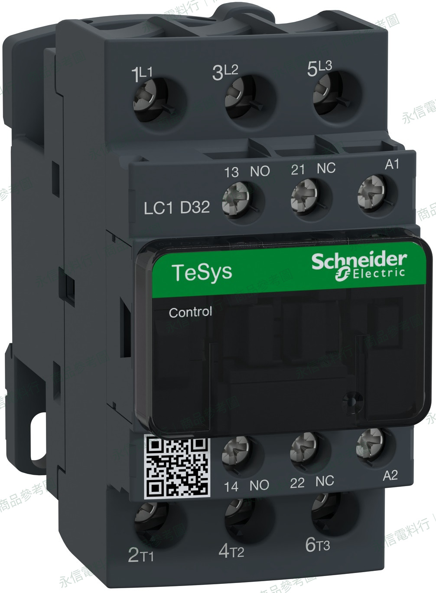

商品圖已統一白底處理並加入永信電料行型錄識別；標示「商品參考圖」者不代表永信自行拍攝或擁有原圖著作權。圖片僅供外觀對照，請依實物銘牌及原廠規格核對。
施耐德 Schneider Electric
電磁接觸器｜TeSys D / Deca（依完整型號核對）
LC1D32M7 AC220V
施耐德 Schneider Electric LC1D32M7 電磁接觸器，資料夾標示控制／線圈 AC220V，容量標示 32A。此頁提供對應商品圖片，便於維修詢價及完整型號核對；不可僅憑外觀與電壓推定替代相容性。
完整型號LC1D32M7
線圈電壓AC220V（依資料夾；實物銘牌請再核對）
容量／使用類別32A（依上傳資料夾標示；應再核對原廠 AC-3 工作條件）
照片5 張
接觸器選型提醒
資料夾所列安培數僅作初步辨識；實際 AC-1／AC-3 工作電流、極數、輔助接點與適用負載應以原廠完整型號資料確認。 同樣是 AC220V 也不能當成直接相容替代品。
本網站不顯示即時庫存、價格或交期；實際供應狀況請洽詢。
完整型號與核對事項
本頁只依上傳資料夾的型號、電壓及照片建立基本商品資料。未逐項核對的 AC-3／AC-1 額定、接點配置、附件、線圈頻率與安裝尺寸，不作保證。
- 完整型號：LC1D32M7，含所有數字與字母；必要時以銘牌上的尾碼為準。
- 控制電壓：AC220V，更換時請同時核對 AC／DC、頻率及線圈規格。
- 額定電流：不可把 AC-1 熱電流與 AC-3 馬達工作電流混為一談。
- 相容判定：必須依負載類別、極數、NO／NC、附件、安裝與配線逐項比對。
接觸器 AC-1、AC-3 與線圈差異
相同外觀或額定安培數，不代表控制馬達與電熱負載時可以使用相同算法；不同品牌與線圈架構也不宜直接替代。
閱讀 AC-1／AC-3 技術文章 →詢價請提供
- 品牌、完整型號與線圈銘牌照片。
- 負載用途（馬達、電熱或其他）、電壓與使用類別。
- 主接點、輔助接點與附加模組。
- 舊品接線、尺寸、安裝及需求數量。